Potenzial, Potenzialdifferenz und Energiebetrachtungen im Feld sind in dieser Tiefe Leistungsfachstoff. Für das Basisfach nur als kurzer Ausblick nutzen.
Fortsetzung zu Elektrische Felder 1: Hier geht es um Energie, Potenzial, Spannung, Kondensatoren und Dielektrika.
Auf der Erde bewegen sich Körper von alleine vom Berg ins Tal. Für den umgekehrten Weg musst du Energie zuführen. Eine ähnliche Idee hilft beim elektrischen Potenzial: Positive Ladungen bewegen sich von selbst von Orten höheren Potenzials zu Orten niedrigeren Potenzials. Negative Ladungen bewegen sich in die umgekehrte Richtung.
Wenn du eine Ladung gegen dieses Potenzialgefälle transportierst, musst du Energie aufbringen. In einem Kondensator kann man als Bezugspunkt zum Beispiel die negative Platte wählen. Dann lässt sich jedem Punkt im Feld ein elektrisches Potenzial zuordnen.
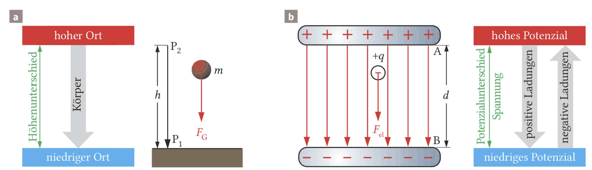
a) Körper bewegen sich von alleine von hohen zu niedrigen Orten.
b) Positive Ladungen bewegen sich von alleine vom hohen zum niedrigen Potenzial, negative Ladungen vom niedrigen zum hohen Potenzial. Umgekehrt muss jeweils Energie hinzugeführt werden.
Werden die Platten eines geladenen Kondensators weiter auseinandergezogen, muss gegen die anziehenden Feldkräfte Arbeit verrichtet werden. Die gespeicherte elektrische Energie und die Spannung steigen. Ein Elektroskop bzw. Elektrometer kann diese Spannungsänderung sichtbar machen, weil bei größerer Spannung mehr Ladung auf das Messgerät übertragen wird.
\(E_\mathrm{pot}=q\cdot \varphi(P)\)
Die potenzielle elektrische Energie einer Ladung hängt von der Ladungsmenge \(q\) und vom Potenzial \(\varphi\) am Punkt \(P\) ab.
\(U=\Delta\varphi=\varphi(P_2)-\varphi(P_1)\)
Die Spannung zwischen zwei Punkten ist die Differenz ihrer elektrischen Potenziale.
\([\varphi]=[U]=1\,\mathrm V\)
Elektrisches Potenzial und elektrische Spannung werden in Volt angegeben.
Äquipotenziallinien, Wegunabhängigkeit der Energie und Potenzialverlauf gehören in dieser Ausführlichkeit ins Leistungsfach.
Auf einer Landkarte verbinden Höhenlinien Punkte gleicher Höhe. Bewegst du dich entlang einer Höhenlinie, ändert sich deine Höhenenergie nicht. Im elektrischen Feld gibt es eine ähnliche Idee: Äquipotenziallinien verbinden Punkte gleichen elektrischen Potenzials.
Äquipotenziallinien stehen senkrecht auf elektrischen Feldlinien. Wenn du eine Ladung entlang einer Äquipotenziallinie verschiebst, ändert sich ihre elektrische potenzielle Energie nicht. Im Inneren eines Plattenkondensators verlaufen Äquipotenzialflächen näherungsweise parallel zu den Platten.
Für den Energietransport zwischen zwei Platten ist im homogenen Feld nur entscheidend, welche Potenzialdifferenz durchlaufen wird. Der genaue Weg ist dabei nicht entscheidend.
Auch in einem homogenen Leiter kann man den Potenzialverlauf betrachten. Legst du an einen Draht der Länge \(l\) die Spannung \(U\), dann steigt die Spannung gegen den Bezugspunkt entlang des Leiters gleichmäßig mit der Strecke \(x\). Der Potenzialverlauf ist also linear.
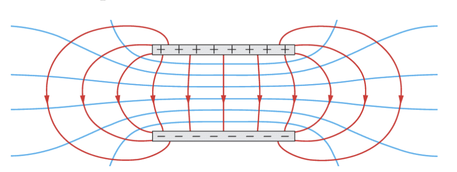
Auf Landkarten werden Stellen gleicher Höhe mit Höhenlinien verbunden. Bewegungen von Körpern entlang dieser Linien verlaufen ohne Energieänderung.
Auch im Kondensator ist die von den Feldkräften übertragene Energie null, wenn eine Probeladung senkrecht zu den Feldlinien bewegt wird, denn die Ladung bleibt auf dem gleichen Potenzial. Entsprechend ist die Spannung zwischen zwei Punkten auf der gleichen Kondensatorplatte null.
Stellen gleichen Potenzials heißen Äquipotenziallinien. Sie verlaufen stets senkrecht zu den elektrischen Feldlinien. Im Inneren eines Plattenkondensators verlaufen sie näherungsweise parallel.
\(E_\mathrm{pot}=mgh\)
Diese bekannte Formel zur Höhenenergie hilft als Analogie für elektrische potenzielle Energie.
\(E_\mathrm{el}=F_\mathrm{el}\cdot d=q\cdot E\cdot d\)
Diese Energie wird benötigt, wenn eine Ladung im homogenen Feld gegen die elektrische Feldkraft über die Strecke \(d\) transportiert wird.
\(E_\mathrm{el}=q\cdot U\)
Die elektrische Energie hängt auch von Ladung und durchlaufener Spannung ab.
\(U=E\cdot d\)
Im homogenen Feld eines Plattenkondensators ist die Spannung Feldstärke mal Plattenabstand.
\(E=\frac{U}{d}\), \([E]=1\,\mathrm{V/m}=1\,\mathrm{N/C}\)
Damit kann man die elektrische Feldstärke im Plattenkondensator über Spannung und Plattenabstand bestimmen.
\(U_x=\frac{x}{l}\cdot U\)
In einem homogenen Leiter wächst die Spannung gegen den Bezugspunkt proportional zur zurückgelegten Leiterlänge \(x\).
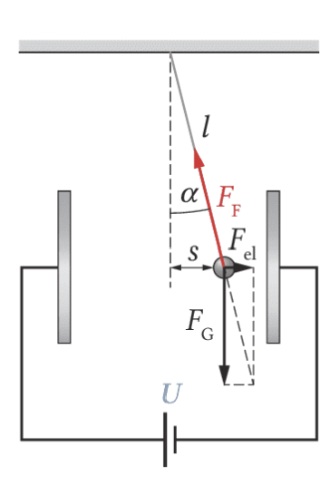
Die Kugel steht im Gleichgewicht. Waagerecht wirkt die elektrische Kraft, senkrecht die Gewichtskraft, entlang des Fadens die Fadenspannung. Aus dem rechtwinkligen Kraftdreieck folgt der Zusammenhang mit dem Auslenkwinkel.
Erst bestimmst du den Winkel aus der Geometrie, dann die elektrische Kraft und danach mit der Feldstärke die Ladung der Kugel.
Flächenladungsdichte, elektrische Feldkonstante und Testplatten-Auswertung sind Leistungsfach-Vertiefung.
Bei einem Plattenkondensator sitzen die felderzeugenden Ladungen auf den Innenseiten der Platten. Im idealisierten homogenen Feld sind sie dort gleichmäßig verteilt. Deshalb beschreibt man nicht nur die gesamte Ladungsmenge \(Q\), sondern die Ladung pro Fläche.
Diese Größe heißt Flächenladungsdichte \(\sigma\). Sie sagt, wie dicht Ladungen auf einer Fläche sitzen. Je größer die Flächenladungsdichte, desto stärker ist das elektrische Feld.
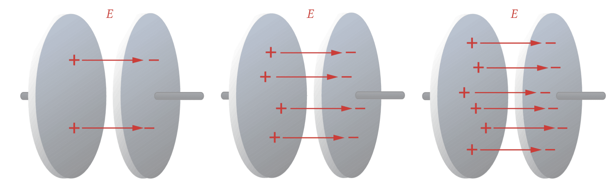
Erzeugt eine doppelt so große Ladungsmenge auf den Kondensatorplatten ein doppelt so starkes elektrisches Feld?
Die Antwort folgt aus \(\sigma=\frac{Q}{A}\) und \(\sigma=\varepsilon_0\cdot E\): Bei gleicher Plattenfläche bedeutet doppelte Ladungsmenge eine doppelte Flächenladungsdichte und damit ein doppelt so starkes Feld.
\(\sigma=\frac{Q}{A}\)
Die Flächenladungsdichte ist Ladungsmenge pro Fläche.
\([\sigma]=1\,\mathrm{C/m^2}\)
\(\sigma=\varepsilon_0\cdot E\)
In Luft bzw. näherungsweise im Vakuum ist die Flächenladungsdichte proportional zur Feldstärke.
\(\varepsilon_0=8{,}85\cdot 10^{-12}\,\mathrm{\frac{C^2}{N\,m^2}}\)
\(\varepsilon_0\) heißt elektrische Feldkonstante.
\(\sigma=\varepsilon_0\cdot\frac{U}{d}\)
Damit kannst du die Flächenladungsdichte über Spannung und Plattenabstand bestimmen.
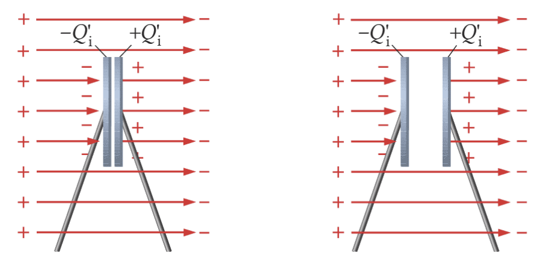
Berühren sich zwei senkrecht zu den Feldlinien stehende Testplatten im Feld, so werden zwischen ihnen durch Influenz Ladungen verschoben. Auf ihrer linken Oberfläche bildet sich die Influenzladung \(-Q_i'\), auf der rechten die gleich große Ladung \(+Q_i'\). Die Ladungssumme bleibt null.
Nach dem Trennen der Platten zeigt sich, dass die Influenzladungen die gleiche Flächendichte \(\sigma\) wie die Kondensatorplatten aufweisen. Das bedeutet: Ein elektrisches Feld der Stärke \(E\) erzeugt eine Flächenladungsdichte \(\sigma\).
Zwischen den leitend verbundenen Testplatten ist das Innere feldfrei. Das ist dieselbe Grundidee wie beim faradayschen Käfig: Frei bewegliche Ladungen ordnen sich so an, dass sich das elektrische Feld im Inneren des Leiters aufhebt.
Kondensatoren speichern getrennte Ladungen. Bei Superkondensatoren wird diese Eigenschaft technisch genutzt, zum Beispiel um Bremsenergie in Fahrzeugen kurzzeitig zu speichern und später wieder abzugeben.
Ein Plattenkondensator besteht aus zwei leitenden Platten, die sich nicht berühren. Zwischen ihnen befindet sich Luft, Plexiglas oder ein anderes nicht leitendes Material. Dieses Material nennt man Dielektrikum.
Ohne angeschlossene Spannungsquelle sind die beweglichen Ladungen gleich verteilt; der Kondensator ist nach außen ungeladen. Legst du eine Spannung an, dann wird die mit dem Pluspol verbundene Platte positiv und die mit dem Minuspol verbundene Platte negativ geladen. Zwischen den Platten entsteht ein elektrisches Feld, und der Kondensator speichert elektrische Energie.
Die gespeicherte Ladungsmenge hängt von der angelegten Spannung ab. Bei einem bestimmten Kondensator ist \(Q\) proportional zu \(U\). Der Quotient aus Ladung und Spannung heißt Kapazität \(C\). Sie beschreibt, wie viel Ladung pro Volt gespeichert werden kann.
Trägst du die Ladungsmenge \(Q\) gegen die Spannung \(U\) in ein Diagramm ein, erhältst du idealisiert eine Ursprungsgerade. Ihre Steigung ist die Kapazität. Anschaulich ist die Kapazität das Fassungsvermögen des Kondensators für Ladung bei einer bestimmten Spannung.
\(C=\frac{Q}{U}\)
Die Kapazität ist Ladungsmenge pro Spannung.
\([C]=1\,\mathrm{\frac{C}{V}}=1\,\mathrm F\)
Die Einheit der Kapazität heißt Farad.
\(C=\varepsilon_0\cdot\frac{A}{d}\)
Für einen luftgefüllten Plattenkondensator steigt die Kapazität mit der Plattenfläche und sinkt mit dem Plattenabstand.
\(W=\frac{1}{2}\,C\,U^2\)
Bei fest angelegter Spannung ist die gespeicherte elektrische Energie proportional zur Kapazität.
Verändere Spannung, Plattenabstand, Plattenfläche und Dielektrizitätszahl. Beobachte, wie viele Ladungszeichen auf den Platten sitzen und wie dicht die Feldlinien im Inneren liegen.
Bei angelegter Spannung gilt im idealen Plattenkondensator \(E=U/d\). Die Feldlinien werden dichter, wenn du \(U\) erhöhst oder \(d\) verkleinerst. Die Anzahl der Ladungszeichen folgt der gespeicherten Ladung \(Q=C\cdot U\).
Ist die Spannungsquelle getrennt, kann keine Ladung nachfließen: \(Q\) bleibt konstant. Ist sie angeschlossen, hält sie \(U\) konstant und kann zusätzliche Ladung auf die Platten transportieren.
Dielektrikum qualitativ und Kapazität sind anschlussfähig. Komplexe Ersatzkapazitäten, Plattenkombinationen und Aufgaben mit mehreren Teilkondensatoren sind Leistungsfachstoff.
Bringt man einen Isolator wie Glas, Keramik oder Öl zwischen die Kondensatorplatten, steigt die Kapazität. Faraday nannte solche Isolatoren Dielektrika. Im Dielektrikum werden Moleküle polarisiert; dadurch entsteht ein Gegenfeld, das die Wirkung im Inneren verändert.
Ist der Kondensator von der Spannungsquelle getrennt, bleibt die Ladung erhalten. Entfernt man dann das Dielektrikum, ändert sich die Spannung. Bleibt der Kondensator dagegen an der Spannungsquelle angeschlossen, bleibt die Spannung konstant und zusätzliche Ladung kann nachfließen.
Kondensatoren können außerdem parallel oder in Reihe geschaltet werden. Die Ersatzkapazität verhält sich dabei umgekehrt zu Widerständen: Parallelkapazitäten addieren sich direkt, bei Reihenschaltungen addieren sich die Kehrwerte.
\(C=\varepsilon_r\cdot C_0=\varepsilon_0\varepsilon_r\frac{A}{d}\)
\(\varepsilon_r\) gibt an, um welchen Faktor ein Dielektrikum die Kapazität erhöht.
\(U=\frac{1}{\varepsilon_r}\cdot U_0\)
Bei getrennter Spannungsquelle und gleicher Ladung ist die Spannung mit Dielektrikum kleiner.
\(Q=\varepsilon_r\cdot Q_0\)
Bei angeschlossener Spannungsquelle kann durch ein Dielektrikum mehr Ladung auf den Kondensator fließen.
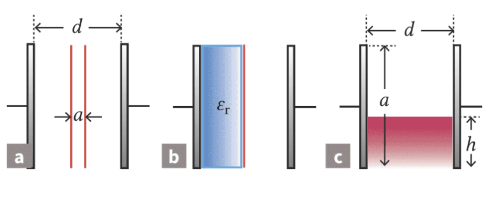
a) Gib an, wie man die Parameter eines Plattenkondensators wählen muss, damit er eine möglichst große Kapazität hat. Nutze \(C=\varepsilon_0\varepsilon_r\frac{A}{d}\): Eine große Plattenfläche \(A\), ein kleiner Plattenabstand \(d\) und ein Dielektrikum mit großer Dielektrizitätszahl \(\varepsilon_r\) erhöhen die Kapazität.
b) Bild a: In einen Plattenkondensator ohne Dielektrikum werden zwei weitere Metallplatten vernachlässigbarer Dicke eingesetzt. Beide sind elektrisch leitend verbunden. Bestimme die Kapazität dieser Plattenkombination und den Sonderfall \(a=0\,\mathrm{cm}\).
c) Bild b: Bei drei Metallplatten ist ein Zwischenraum mit einem Dielektrikum \(\varepsilon_r=3{,}4\) gefüllt, der andere mit Luft \(\varepsilon_r=1{,}0\). Berechne die Kapazität der Kombination.
d) Bild c: In einen vertikalen Plattenkondensator mit \(d=5{,}0\,\mathrm{cm}\), Höhe \(a=60\,\mathrm{cm}\), Breite \(b=40\,\mathrm{cm}\) wird Öl mit \(\varepsilon_r=2{,}2\) eingefüllt. Gib \(C(h)\) an und berechne \(C\) für \(h=30\,\mathrm{cm}\).
\(C_\mathrm{ges}=C_1+C_2+C_3\)
Für parallel geschaltete Kondensatoren addieren sich die Kapazitäten.
\(\frac{1}{C_\mathrm{ges}}=\frac{1}{C_1}+\frac{1}{C_2}+\frac{1}{C_3}\)
Für in Reihe geschaltete Kondensatoren addieren sich die Kehrwerte der Kapazitäten.
\(Q=C\cdot U\), \(U=\frac{Q}{C}\)
Diese Umstellungen brauchst du bei Elektrometer- und Messverstärkeraufgaben.
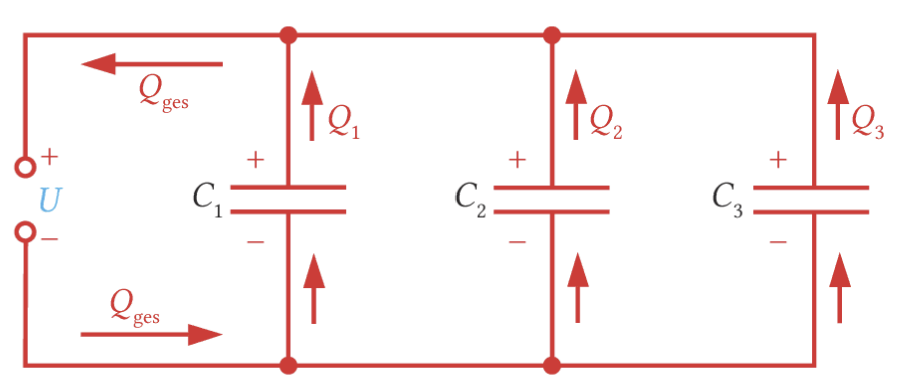
Alle Kondensatoren liegen an derselben Spannung. Die Ladungen auf den einzelnen Kondensatoren addieren sich zur Gesamtladung. Deshalb addieren sich bei der Parallelschaltung die Kapazitäten direkt.
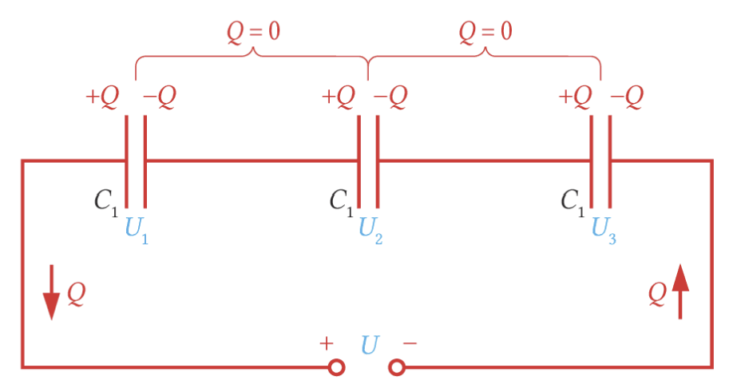
Bei der Reihenschaltung tragen die Kondensatoren betragsmäßig dieselbe Ladung. Die Teilspannungen addieren sich zur Gesamtspannung. Deshalb addieren sich die Kehrwerte der Kapazitäten.
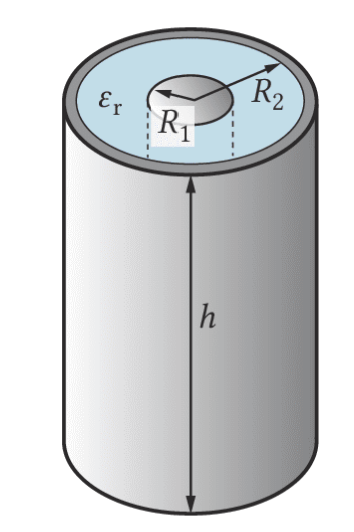
Der Metallstab und die Fasswand bilden einen Zylinderkondensator. Luft und Öl wirken als unterschiedliche Dielektrika. Wenn der Ölstand steigt, wächst der Anteil mit größerer relativer Permittivität und damit die gemessene Kapazität.
Der Millikan-Versuch ist eine sinnvolle Vertiefung nach Kondensator und Feldkraft. Im Basisfach kannst du die Idee der quantisierten Ladung nutzen; die Auswertung mit Schwebespannung, Sinkgeschwindigkeit und Kräftegleichgewicht gehört in die LF-Zusatzstunden.
Beim Spielzeug „Flying Stick“ trennt man elektrische Ladungen. Die dünne Metallfolie wird dadurch geladen und erfährt in einem elektrischen Feld eine Kraft. Sie kann schweben, wenn die elektrische Kraft nach oben genauso groß ist wie die Gewichtskraft nach unten.
Robert A. Millikan nutzte ein ähnliches Prinzip mit winzigen Öltröpfchen. Zwischen zwei Kondensatorplatten werden Öltröpfchen zerstäubt. Manche Tröpfchen sind ungeladen und sinken normal. Andere sind positiv oder negativ geladen und bewegen sich im elektrischen Feld anders. Stellt man die Spannung so ein, dass ein einzelnes geladenes Tröpfchen schwebt, herrscht Kräftegleichgewicht.
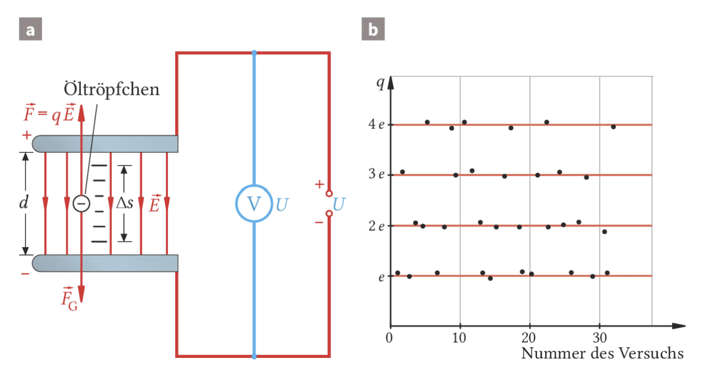
Links ist der Aufbau mit Kondensatorplatten, Mikroskop und Öltröpfchen gezeigt. Rechts erkennst du die entscheidende Beobachtung: Die Ladungen der Tröpfchen sind nicht beliebig, sondern treten als Vielfache einer kleinsten freien Ladung auf.
Genau daraus folgt die Idee der Elementarladung.
\(F_\mathrm{el}=qE\), \(E=\frac{U}{d}\)
Die elektrische Kraft auf ein Tröpfchen hängt von seiner Ladung \(q\), der Spannung \(U\) und dem Plattenabstand \(d\) ab.
\(q=\frac{F_G}{E}=F_G\frac{d}{U}\)
Wenn das Tröpfchen schwebt, gilt \(F_\mathrm{el}=F_G\). Daraus lässt sich die Tröpfchenladung berechnen.
\(e=1{,}602\cdot10^{-19}\,\mathrm C\)
Die Elementarladung ist die kleinste beobachtete freie Ladungsmenge. Elektronen tragen \(-e\), Protonen \(+e\).
Die Gewichtskraft der winzigen Öltröpfchen kann man nicht direkt bequem messen. Millikan nutzte deshalb die Sinkbewegung ohne elektrisches Feld. Wenn die Tröpfchen mit konstanter Geschwindigkeit sinken, gleichen sich Gewichtskraft und Reibungskraft aus. Aus der Sinkgeschwindigkeit kann man auf die Gewichtskraft schließen und dann mit der Schwebespannung die Ladung bestimmen.
Viele Messungen zeigen: Es treten nur ganzzahlige Vielfache von \(e\) auf. Zwischenwerte wie \(0{,}7e\) oder \(3{,}3e\) werden bei freien Ladungsträgern nicht beobachtet. Quarks besitzen zwar Bruchteile von \(e\), wurden aber nicht als freie Teilchen nachgewiesen.
Die qualitative Idee „Feldkräfte ändern Bewegungen geladener Teilchen“ ist gemeinsam nutzbar. Die Rechnungen mit Elektronengeschwindigkeit, Elektronenvolt und Bahngleichung gehören ins Leistungsfach.
Elektrische Felder können geladene Teilchen beschleunigen oder abbremsen. Das ist keine neue Mechanik: Auf das Teilchen wirkt eine Kraft, also ändert sich seine Geschwindigkeit. Neu ist nur die Ursache der Kraft: Sie kommt vom elektrischen Feld.
Eine Elektronenkanone erzeugt ein schmales Elektronenbündel. Aus einer erhitzten Glühkathode treten Elektronen aus. Zwischen Kathode und Anode liegt eine Beschleunigungsspannung. Die Elektronen werden zur Anode hin beschleunigt und treten durch eine kleine Öffnung aus. Ein negativ geladener Wehnelt-Zylinder bündelt den Strahl.
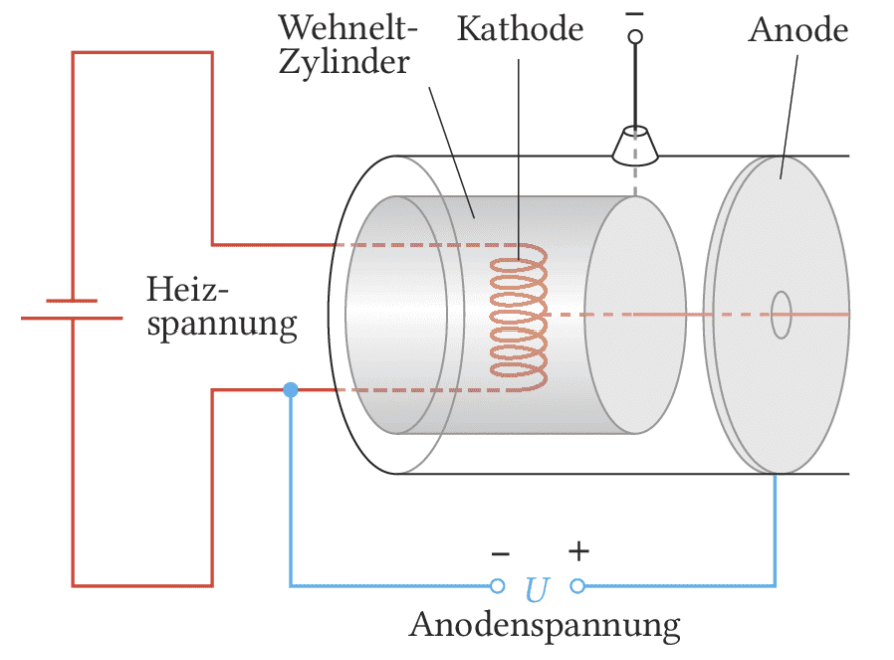
Die Glühkathode liefert Elektronen. Die Beschleunigungsspannung erhöht ihre kinetische Energie. Die Anodenöffnung lässt nur ein schmales Bündel durch. Der Wehnelt-Zylinder wirkt wie eine elektrische Blende.
\(E_\mathrm{kin}=\frac12mv^2=eU\)
Ein zunächst ruhendes Elektron gewinnt beim Durchlaufen der Spannung \(U\) die Energie \(eU\).
\(v=\sqrt{\frac{2eU}{m}}\)
Damit berechnest du die Geschwindigkeit eines nichtrelativistisch beschleunigten Elektrons.
\(1\,\mathrm{eV}=1e\cdot1\,\mathrm V=1{,}602\cdot10^{-19}\,\mathrm J\)
Ein Elektronenvolt ist die Energie, die ein Teilchen mit Elementarladung beim Durchlaufen von \(1\,\mathrm V\) gewinnt.
Für \(U=100\,\mathrm V\), \(e=1{,}602\cdot10^{-19}\,\mathrm C\) und \(m=9{,}1\cdot10^{-31}\,\mathrm{kg}\) ergibt sich \(v\approx6{,}0\cdot10^6\,\mathrm{m/s}\). Setzt man formal \(v=c\), erhält man etwa \(260\,\mathrm{kV}\). Das ist aber nur eine klassische Rechnung: Bei sehr großen Geschwindigkeiten muss relativistisch gerechnet werden; die Lichtgeschwindigkeit wird nicht erreicht.
Die Bahnkurve im homogenen elektrischen Feld ist Leistungsfachstoff. Im Basisfach genügt die qualitative Aussage: Geladene Teilchen werden je nach Vorzeichen zur passenden Platte hin abgelenkt; neutrale Teilchen werden nicht elektrisch abgelenkt.
Nach der Elektronenkanone fliegen Elektronen mit nahezu konstanter Geschwindigkeit in x-Richtung in einen Plattenkondensator. In x-Richtung wirkt keine elektrische Kraft. In y-Richtung wirkt die elektrische Kraft durch das homogene Feld. Die Bewegung ist deshalb wie ein waagrechter Wurf: gleichförmig in x-Richtung, gleichmäßig beschleunigt in y-Richtung.
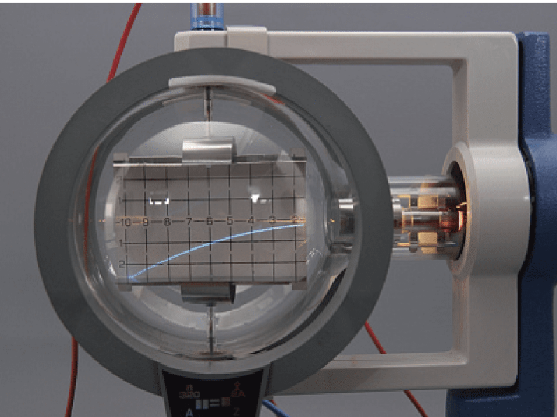
Erhöht man die Ablenkspannung \(U_y\), wird die vertikale Ablenkung größer. Erhöht man die Beschleunigungsspannung \(U\), fliegen die Elektronen schneller durch den Kondensator und werden weniger stark abgelenkt.
\(E_y=\frac{U_y}{d}\)
Die vertikale Feldstärke im Ablenkkondensator hängt von Ablenkspannung und Plattenabstand ab.
\(a_y=\frac{qE_y}{m}\)
Ein Ladungsträger mit Ladung \(q\) und Masse \(m\) wird parallel zum Feld beschleunigt. Beim Elektron ist wegen \(q=-e\) die Beschleunigungsrichtung entgegengesetzt zur Feldrichtung.
\(x=v_xt\), \(\quad y=\frac12a_yt^2\)
Damit beschreibst du die Bewegung getrennt in horizontaler und vertikaler Richtung.
\(y(x)=\frac12a_y\left(\frac{x}{v_x}\right)^2\)
Diese Bahngleichung zeigt die Parabelform. Für Elektronen setzt du \(a_y=-eU_y/(dm)\) ein.
Probiere die Formel direkt aus: In der Simulation fliegt ein geladenes Teilchen waagrecht in das homogene Feld eines Plattenkondensators. Die waagrechte Geschwindigkeit bleibt konstant, die elektrische Kraft wirkt senkrecht dazu. Dadurch entsteht die Parabelbahn wie beim waagrechten Wurf.
Erhöhe zuerst \(|q|\) oder \(E\): Die Bahn krümmt sich stärker. Erhöhe danach \(v_x\): Das Teilchen ist kürzer im Feld und kann zwischen den Platten hindurchfliegen. Wenn du das Vorzeichen von \(q\) oder die Spannungsrichtung änderst, kehrt sich die Ablenkung um.
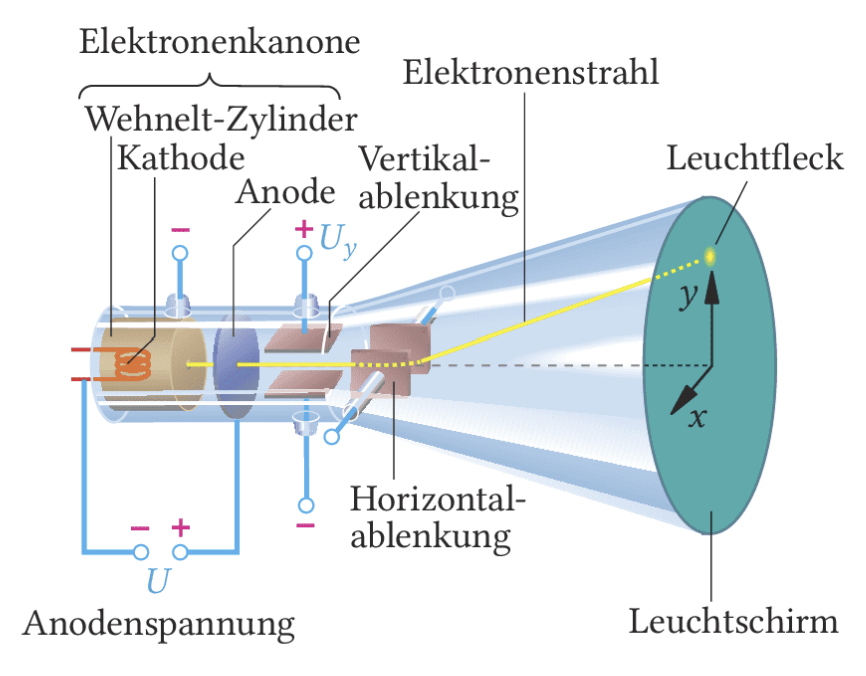
In einer braunschen Röhre wird ein Elektronenstrahl in horizontaler und vertikaler Richtung abgelenkt. So konnten ältere Bildschirme Bilder zeilenweise aufbauen. Oszilloskope nutzen dasselbe Prinzip, um elektrische Signale sichtbar zu machen.
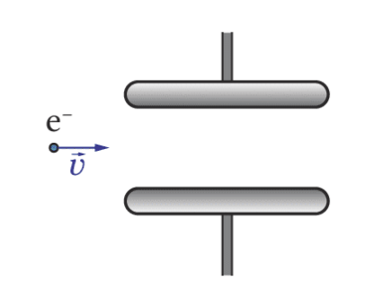
a) Damit ein Elektron nach oben abgelenkt wird, muss die elektrische Kraft nach oben zeigen. Weil Elektronen negativ geladen sind, ist das elektrische Feld nach unten gerichtet: obere Platte positiv, untere Platte negativ.
b) Für \(v=0{,}05c\) ergibt sich aus \(U=mv^2/(2e)\) etwa \(640\,\mathrm V\).
c) Bei einem bremsenden Längsfeld gilt \(E_\mathrm{kin}=eEd\), also \(d=E_\mathrm{kin}/(eE)\).
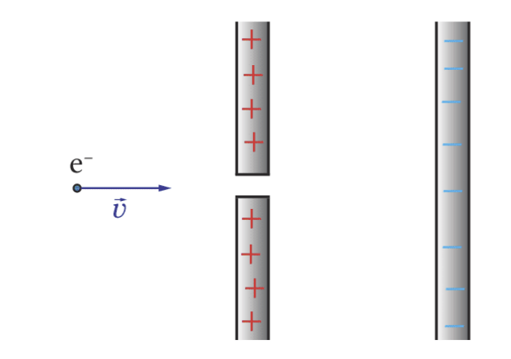
Berechne zuerst \(v_x\) aus der kinetischen Energie. Dann berechnest du \(a_y=eU_y/(md)\) und setzt \(x=l\) in die Bahngleichung ein. Ist \(|y(l)|
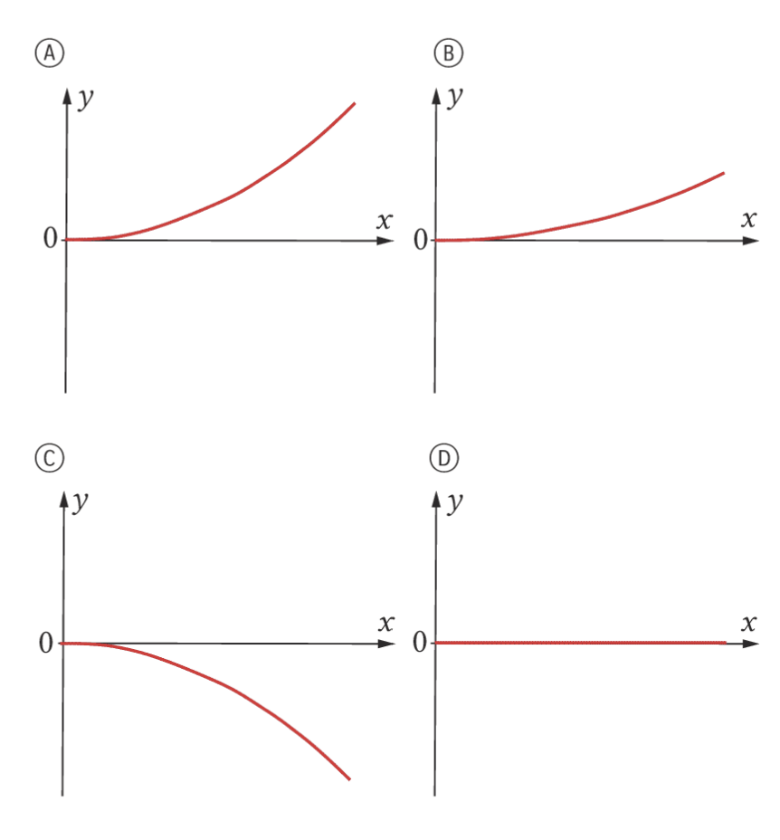
Welches Vorzeichen hat die Ladung? Wie groß ist die Masse? Neutrale Teilchen werden nicht elektrisch abgelenkt. Bei gleicher Geschwindigkeit und gleicher Feldstärke wird ein leichtes Teilchen stärker beschleunigt als ein schweres.
Diese Seite ist eine Analogieseite. Sie hilft dir, elektrische Felder mit bekannten Ideen aus der Mechanik zu vergleichen. Einzelne Teile, besonders das Coulomb-Gesetz, sind Leistungsfach-Vertiefung.
Bei Potenzial und Spannung hast du bereits ein Muster benutzt: elektrische Potenziale verhalten sich ähnlich wie Höhen, Potenzialunterschiede ähnlich wie Höhenunterschiede. Auch bei Kräften und Feldern gibt es eine starke Analogie.
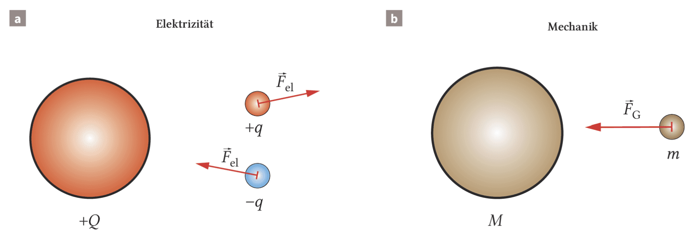
In beiden Fällen ordnest du jedem Ort eine Größe zu: Höhe im Gravitationsfeld, Potenzial im elektrischen Feld. Bewegungen entlang gleicher Höhe oder gleichen Potenzials benötigen keine Energieänderung.
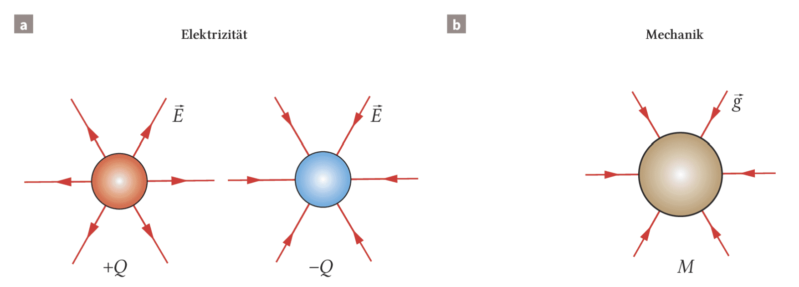
Für Massen gilt immer Anziehung. Elektrische Ladungen können sich anziehen oder abstoßen. Deshalb können elektrische Feldlinien zu negativen Ladungen hin oder von positiven Ladungen weg zeigen.
\(F_G=m\cdot g\)
Die Gewichtskraft ist proportional zur Probemasse. Der Ortsfaktor \(g\) beschreibt die Stärke des Gravitationsfeldes am Ort der Probemasse.
\(g=G\frac{M}{r^2}\), \(\quad F_G=G\frac{mM}{r^2}\)
Das Gravitationsgesetz beschreibt die Abhängigkeit von Masse \(M\) und Abstand \(r\). \(G\) ist die Gravitationskonstante.
Das Coulomb-Gesetz und der genaue \(1/r^2\)-Vergleich sind Leistungsfachstoff. Im Basisfach reicht meist die qualitative Analogie: Feldstärke hängt vom Ort und von der Quelle des Feldes ab.
\(F_\mathrm{el}=k\frac{qQ}{r^2}\), \(\quad k=\frac{1}{4\pi\varepsilon_0}\)
Das Coulomb-Gesetz beschreibt die elektrische Kraft zwischen zwei punktförmigen Ladungen. Für feste Quelle \(Q\) und festen Abstand \(r\) erhältst du wieder \(F_\mathrm{el}=qE\).
Diese Seite ist bewusst nur eine Zwischenzusammenfassung. Du hast bis hierhin Feldstärke, Potenzial, Spannung, Kondensatorgrundlagen, Kapazität, Dielektrikum, Elementarladung, Elektronenkanone, Teilchenbahnen und den Vergleich zum Gravitationsfeld erarbeitet.
Noch nicht vollständig behandelt sind Energie im Kondensator, Energiedichte, Stromstärke als Ableitung der Ladung sowie Auf- und Entladevorgänge. Diese große Gesamtzusammenfassung kommt deshalb erst am Ende von Elektrische Felder 3.
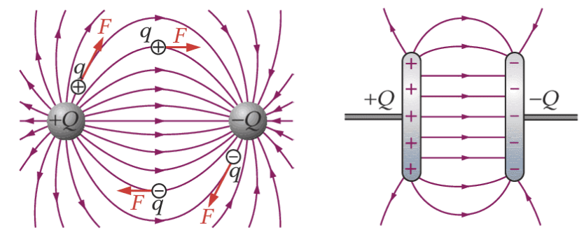
Du kannst die Richtung der Feldlinien erklären, eine Kraft auf eine Probeladung bestimmen und im homogenen Feld des Plattenkondensators mit \(E=U/d\) arbeiten.
Im Leistungsfach kommt dazu: Vektorielle Deutung, Coulomb-Gesetz, Bahnkurven und quantitative Ablenkung.
\(\vec E=\frac{\vec F}{q}\), \(\quad \vec F=q\vec E\)
\(E=\frac Ud\)
\(U=\Delta\varphi\), \(\quad E_\mathrm{el}=qU\)
\(C=\frac QU\), \(\quad C=\varepsilon_0\varepsilon_r\frac Ad\)
\(e=1{,}602\cdot10^{-19}\,\mathrm C\), \(\quad 1\,\mathrm{eV}=1{,}602\cdot10^{-19}\,\mathrm J\)
Die folgenden Formeln gehören in die LF-Zusatzstunden: \(v=\sqrt{2eU/m}\), \(a_y=qE_y/m\), \(y(x)=\frac12a_y(x/v_x)^2\) und \(F_\mathrm{el}=kqQ/r^2\).
Diese Aufgaben verwenden nur Inhalte aus Elektrische Felder 1 und den bisherigen Seiten von Elektrische Felder 2. Aufgaben zu Auf-/Entladen, Halbwertszeit und Feldenergie stehen erst in Elektrische Felder 3.
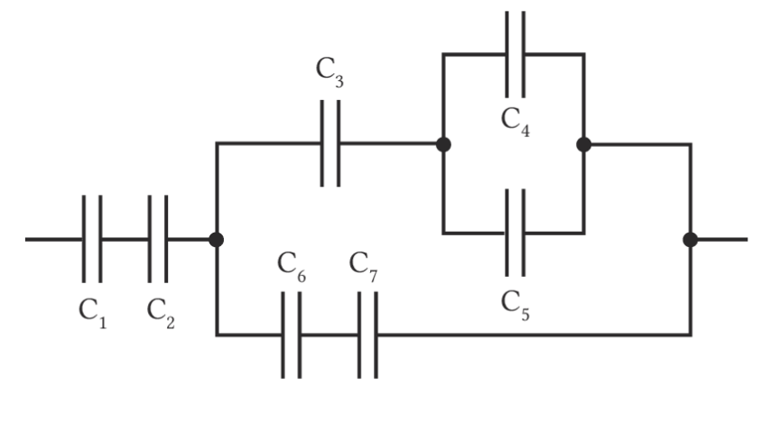
Suche zuerst Teilgruppen. Parallel geschaltete Kondensatoren addierst du direkt. Bei Reihenschaltungen addierst du die Kehrwerte. Danach ersetzt du die Teilgruppe durch ihre Ersatzkapazität.
Zum Abschluss formulierst du die wichtigsten Begründungen zusammenhängend. Das hilft dir, die Aufgaben nicht nur rechnerisch, sondern auch sprachlich sicher zu beherrschen.
Du kannst Potenzial und Spannung unterscheiden, Äquipotenziallinien deuten, die Feldstärke im Plattenkondensator berechnen, Flächenladungsdichte und Kapazität verwenden und den Einfluss eines Dielektrikums erklären. Außerdem kannst du Millikans Elementarladungsidee, Elektronenkanone, Parabelbahn im Kondensator und den Vergleich von elektrischem Feld und Gravitationsfeld einordnen.
Im nächsten Teil untersuchst du, wie viel Energie ein Kondensator speichert und warum Laden und Entladen exponentiell verlaufen.
Inhaltlich orientiert an Dorn/Bader: Physik Kursstufe, Kapitel 1 „Das elektrische Feld“, sowie Bildungsplan BW Physik V3.0. Der Text wurde für diese interaktive Schülerseite neu formuliert.